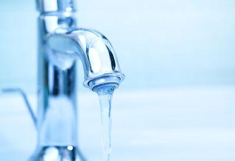
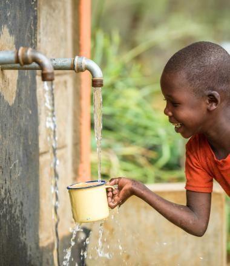
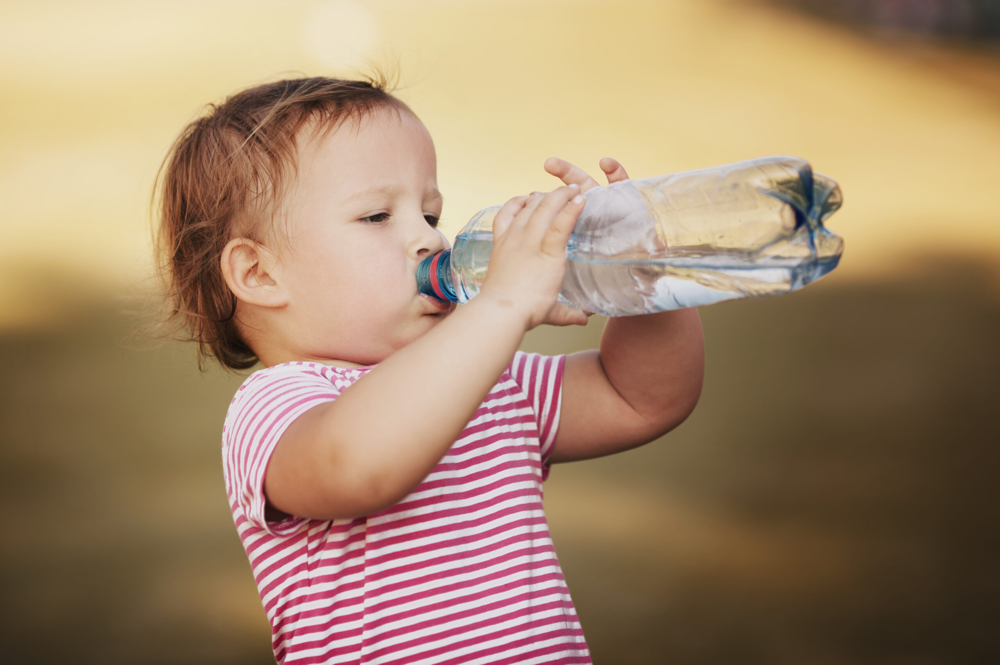
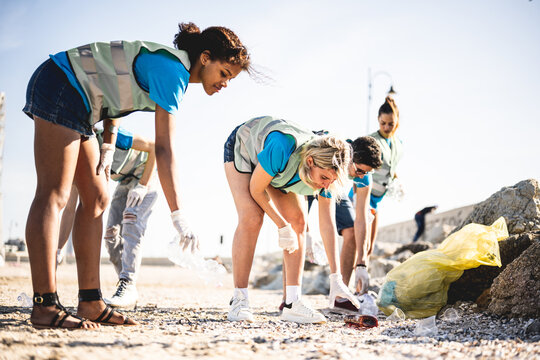
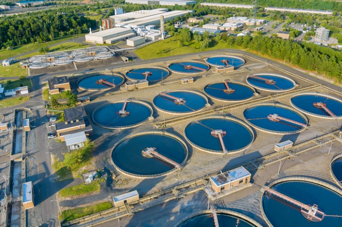
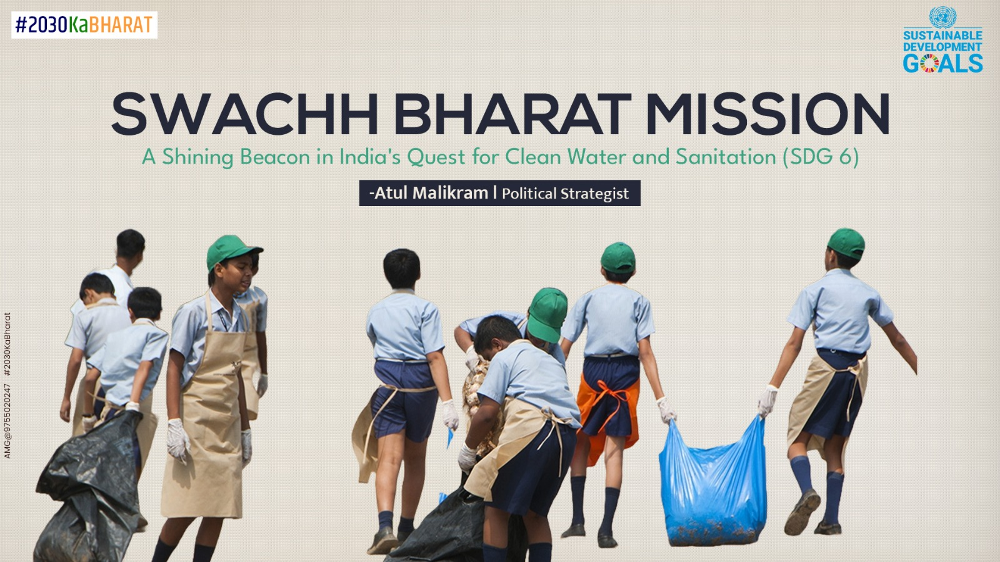
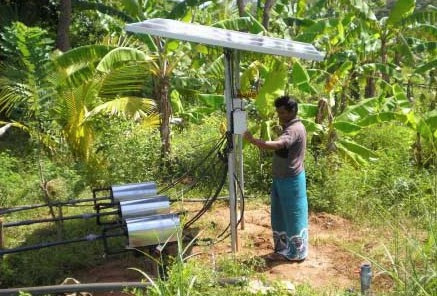

Access to clean and safe drinking water is a fundamental human right and a crucial aspect of Sustainable Development Goal 6 (SDG 6). This section aims to ensure universal and equitable access to safe, affordable drinking water for all by 2030. Despite global progress, millions of people, particularly in rural and underdeveloped regions, still struggle to access clean water. The lack of safe drinking water poses severe health risks, contributes to poverty, and hampers economic development.



Despite progress, significant challenges remain:

To address these challenges, we need:


This initiative significantly improved sanitation and access to clean water, reducing waterborne diseases in rural India.
Several African countries have adopted solar-powered filtration systems, providing clean drinking water to off-grid communities.
Efforts by local and international organizations have improved water infrastructure in rural Sri Lanka, benefiting thousands of households.




Access to safe drinking water is essential for health, economic stability, and environmental sustainability. While significant progress has been made, urgent action is needed to ensure clean water reaches everyone. Governments, organizations, and individuals must work together to achieve SDG 6.1 and create a future where no one is deprived of this basic necessity.